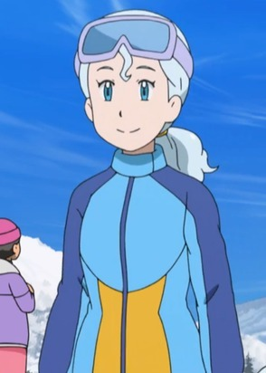
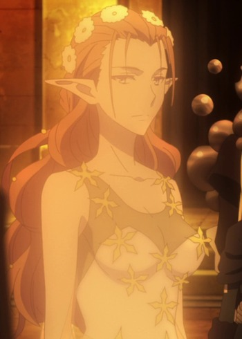
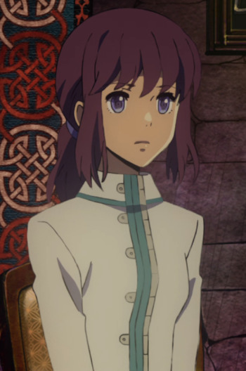
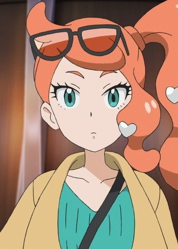

|  |
Cerah |
Pokemon Sun and Moon |
Cerah is a PokeSled athele and Pokemon Teainer. She is a skilled trainer and PokeSledder with her Alolan Ninetales. |
|  |
Faye |
Lord El-Melloi II Case Files: Rail Zeppelin Grace Note |
Faye is a fairy from Marburry Workshop. |
|  |
Itia |
Children of the Whales |
Itia is a scribe hat works fo the Allied Empire. She hows very little emotions like most of the Allied Empire. |
 |
Lillian Weinberg |
Dr. Stone |
Lillian Weinberg is a famous American singer and NASA astronaut that broaded the International Space Station alongside Byukuya Ishigami. She witnessed the petrification of humans on Earth's surface. She is a kind and shy young woman. She is a little bit plyful as well. She is a profound lover of music, liking a range from Mozart to The Beetles. She wants to unite huamnity through with her talents. She believes that the importance of fun and entertainment being crucial to the survival of humanity. |
 |
Sakura Yamauchi |
I Want to Eat Your Pancreas |
Sakura Yamauchi is a teenager with a pancreas disease. She has a outgoing and excited personality due to her shortened life. She has a diary about her life with the disease. |
 |
Scheta |
Sword Art Online: Alicization - War of Underworld |
Scheta Synthesis Twelve is one of the Integrity Knight synthesised after winning a Four Empires Unity Tournament. Due to her reluctance to speak and attract attention, she became known as the Silent. Despite her desire to restrain her dark impulses, Scheta would be unable to resist temptations. Her weapon is called Black Lily Sword. She rarely speaks when she was in a battle. |
 |
Shishou |
Kino's Journey: The Beautiful World - The Animated Series |
Shishou is Kino's master who taught her marksmanship. She lives in the forest and does not travel. |
|  |
Sonia |
Pokemon: Twilight Wings |
Sonia is the researcher assistant and grandaughter to Professor Magnolia. She is also friends with Leon. |